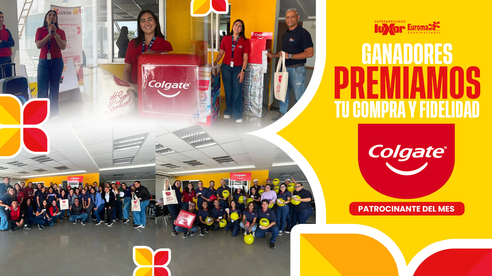
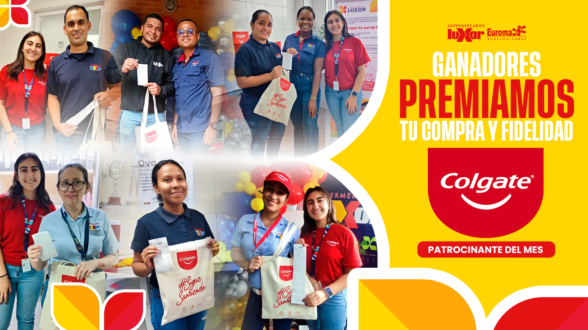
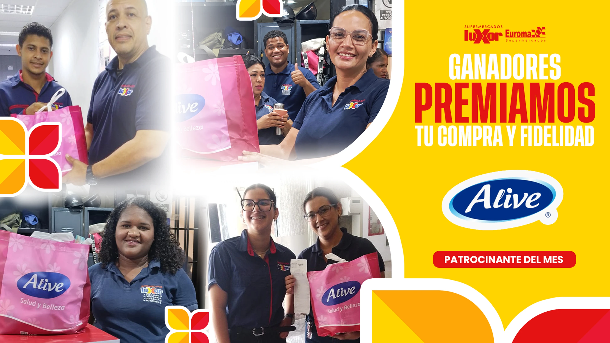
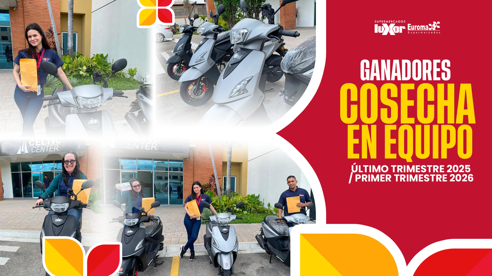
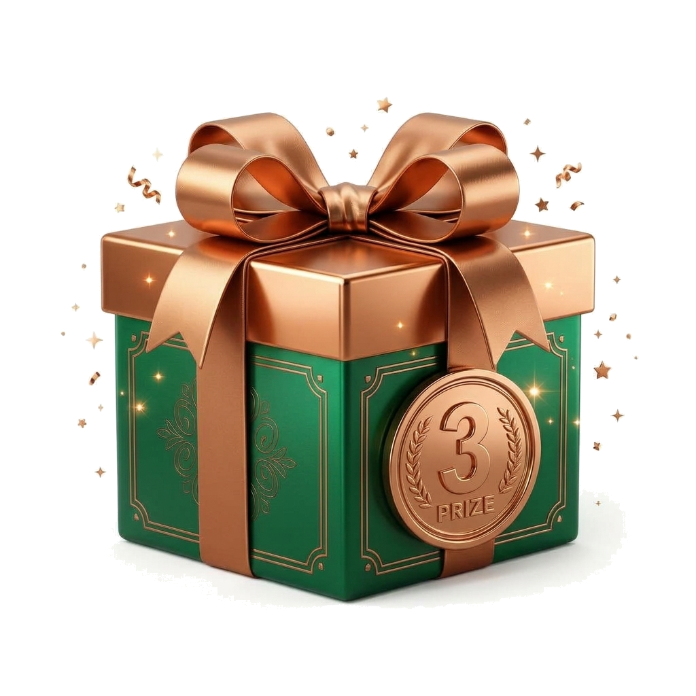

PRESENTADO POR
Una iniciativa corporativa de integración y excelencia operativa para las sucursales de Supermercados Luxor. En tres emocionantes rounds, nuestros equipos demuestran frescura, exhibición comercial, atención al cliente y trabajo en equipo para alcanzar los grandes premios de la temporada.
Inscribe a tu equipo o sucursal en el formulario oficial.
Prepara tu área, exhibiciones y estándares de frescura y servicio.
Supera las auditorías de los tres rounds junto a tu equipo.
Recibe la confirmación del equipo evaluador y celebra los resultados.




En GRAN COSECHA LUXOR, reconocemos la dedicación, el compromiso y la calidad de servicio de nuestros colaboradores con premios pensados para celebrar el esfuerzo de cada equipo.
Gran Premio Corporativo y Trofeo Luxor
Incentivo Especial para Todo el Equipo

3° PUESTOReconocimiento Destacado y Cesta Luxor